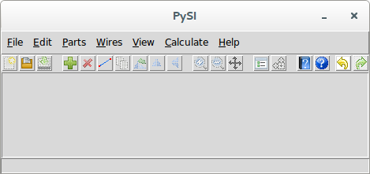

Drawing a Schematic for Virtual Probing
When PySIApp opens, you have a blank canvas and are ready to draw a schematic for virtual probing.

Drawing the schematic is accomplished through the addition of parts, wires, measure probes, output probes and stims.
To add parts to the schematic, see
Add Part↓. To add wires to the schematic, see
Add Wire↓.